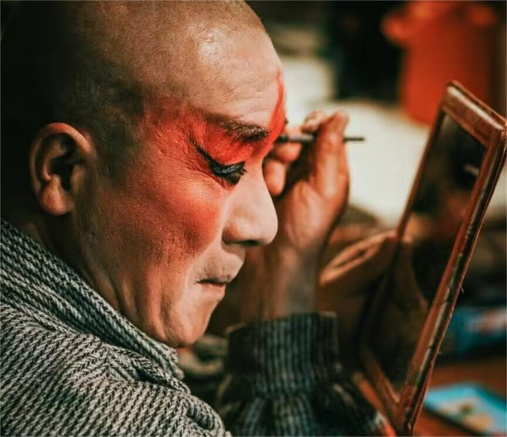
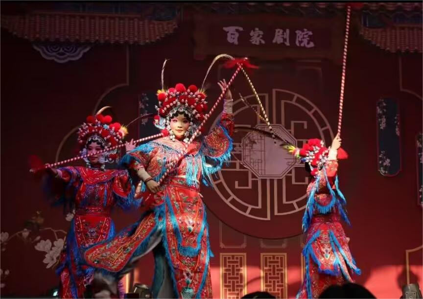
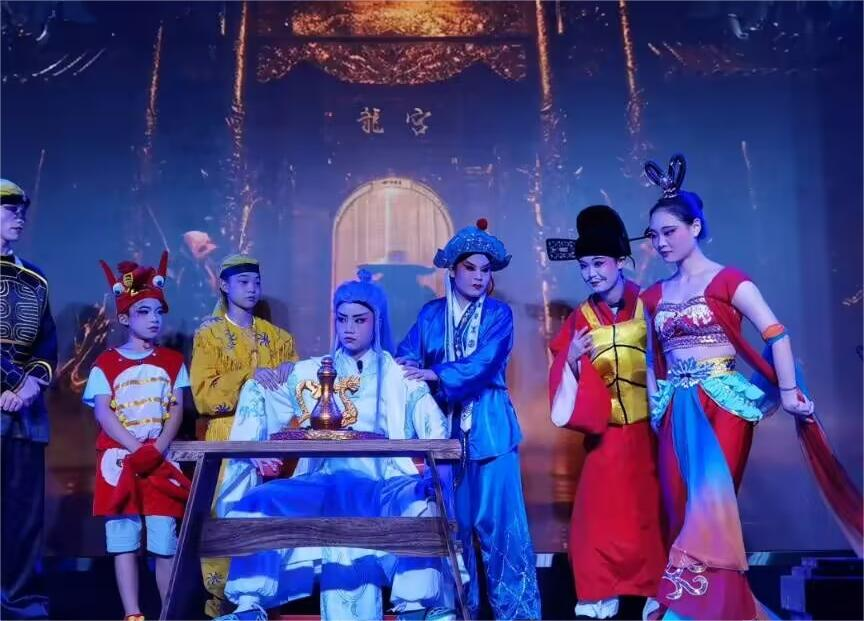
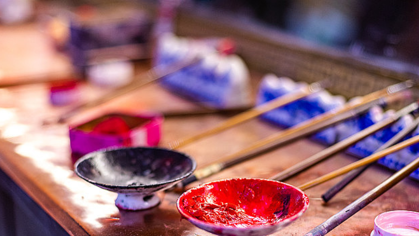
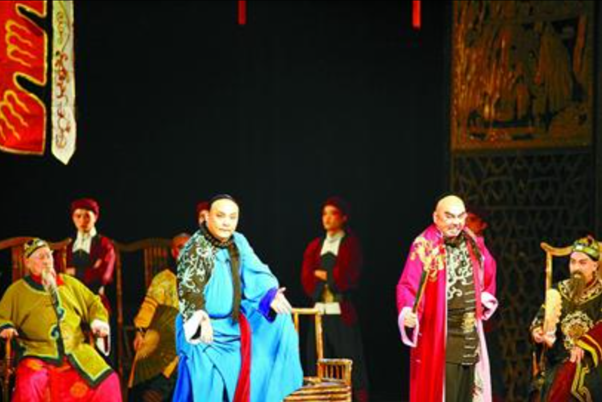
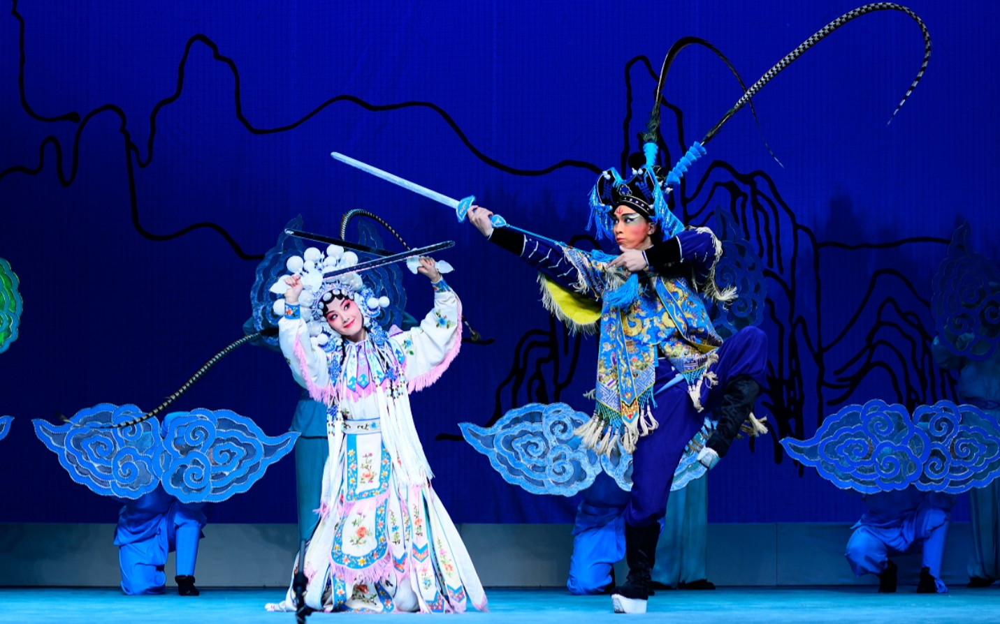
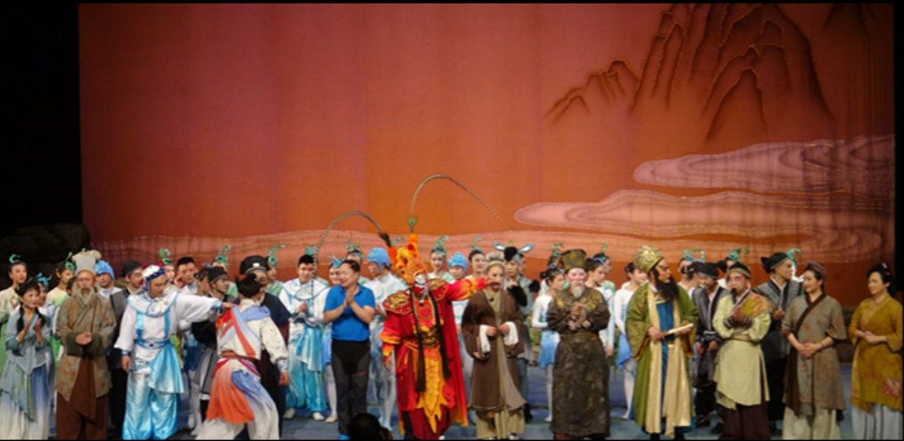

川剧保护
川剧保护CHUANJUBAOHU
川剧，这一东方戏剧的活化石，正面临前所未有的挑战。随着现代生活节奏的加快，川剧的传统演出方式逐渐被边缘化，年轻一代对其兴趣减少，导致观众群体老龄化。然而，川剧并未失去生命力，数字媒体和互联网的推动下，川剧开始打破地域限制，走向更广阔的舞台。政府出台保护和扶持政策，教育机构将川剧纳入教学体系，非遗保护组织和民间团体积极参与传承工作，通过演出和培训活动，让更多人了解和接触川剧。我们呼吁，社会各界应共同努力，支持川剧的保护与发展，让这一民族艺术瑰宝在新的历史时期焕发出更加绚丽的光彩。
- 
- 
- 
戏剧现状XIJUXIANZHUANG
|  |
|
|  |
|
|  |
|
|  |
|
评论区PINGLUNQU
-
赏戏曲之美，感传承之心
我是90后的戏剧从业者（编剧），我最大的理想是有一天我们不必再用“坚持”“坚守”“抢救”“传承”甚至包括“热爱”这种词来形容戏剧从业者，我们的坚持和热爱其实只是因为见过了真正的戏曲之“美”，我们只是“爱美”罢了。我希望有更多的人，可以拨开种种庸俗的、虚伪的、片面的、伪装成舶来的“美”，去看见我们中国世代祖先传下来的真正的风雅、含蓄、豪放、婉约、意象之美...
11.21 -
川承
突然感觉好有意义，老一辈的长辈在我们小时候就喜欢拉着我们看戏，那时候都觉得无聊，但是长大后突然就明白了，作为国家的文化瑰宝，川剧也有独特的魅力，因为家里老奶奶曾经是京剧演员，做这一行做了二十年，进行戏曲练习是一个非常困难的事情，迟早这一次真的是下功夫了，但是现在时间飞逝太快，都已经物是人非，现在的年轻人没有太多会关注川剧，戏曲之类的像这样的视频真的好有意义，也希望戏曲越来越被更多的人知道...
10.15 -
热爱可抵岁月漫长
没敢看完 泪目了，我妈妈也是民间戏曲班，也是十几岁开始，现在六十多了，从前可供人们消磨时间的东西没有现在这么多，逢年过节村里都会搭戏台，我总会很骄傲的指着台上神采奕奕的妈妈介绍给我的朋友们，如今看的人没有那么多了，炎夏与寒冬的晚上他们还会聚到一起练习，我不懂，多次劝阻，直到有一次我发现，登台时，她六十多岁的眼睛里还闪着我小时候见过的那种光...
07.24 -
川剧的指痕
作为一个四川人表示惭愧，现代化的进程赶着我们不得不快节奏地向前，作为一个收入不高的社畜没有这样的缘分可以去支持这些传统的东西，也没有那个心思和条件去欣赏，但是我十分支持保护传统文化的行为...
05.25